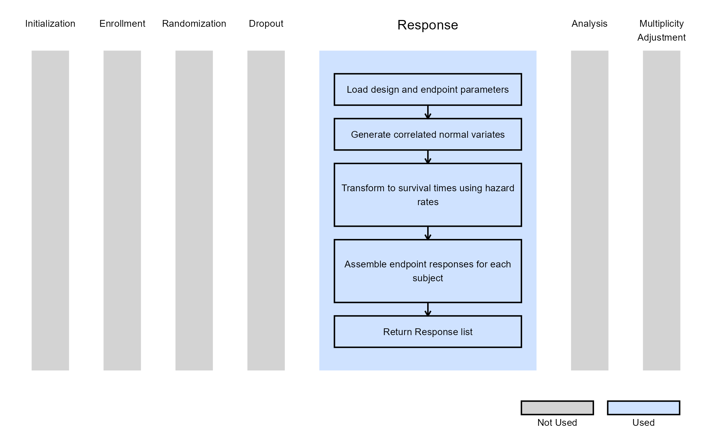
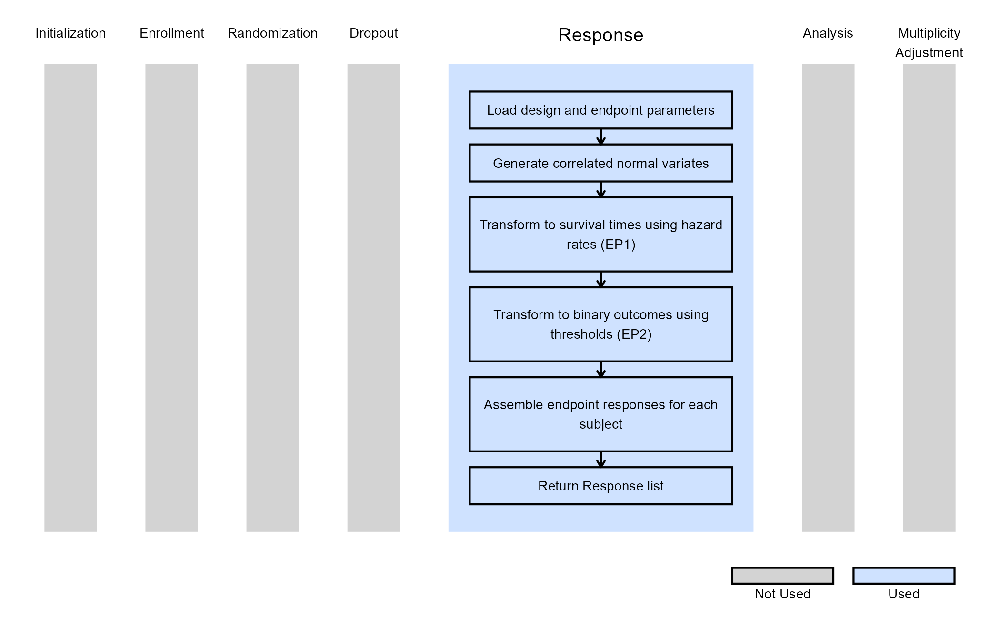

Dual Endpoints - Patient Simulation
Gabriel Potvin, Anoop Singh Rawat, Pradip Maske
February 19, 2026
DEPPatientSimulation.RmdThis example is related to the Integration Point: Response - Dual Endpoints. Click the link for setup instructions, variable details, and additional information about this integration point.
- Study objective: Two Arm Confirmatory
- Number of endpoints: Dual Endpoints
- Endpoint type: Time-to-Event - Time-to-Event
- Task: Explore
- Response Input Method: Hazard Rate
Introduction
The following examples illustrate how to integrate new patient outcome simulation (response) capabilities into East Horizon using R functions in the context of 2-arm clinical trials with dual endpoints. The first example shows how to simulate correlated dual time-to-event (TTE) endpoints.
In the R directory of this example you will find the following R files:
SimulatePatientOutcomeDEPSurvSurvSingleHazardPiece.R - Contains the implementation for simulating correlated TTE outcomes under a single-piece hazard assumption for both endpoints.
SimulatePatientOutcomeDEPSurvBinSingleHazardPiece.R - Contains the implementation for simulating correlated TTE and binary outcomes under a single-piece hazard assumption for both endpoints.
Example 1 - Simulate Correlated TTE-TTE Dual Endpoints
This example is related to this R file: SimulatePatientOutcomeDEPSurvSurvSingleHazardPiece.R
The function SimulatePatientOutcomeSurvSurv.DEP simulates patient-level outcomes for a dual-endpoint design where both endpoints are time-to-event variables. Each endpoint is modeled using an exponential survival distribution, with arm-specific hazard rates supplied through the East Horizon interface.
To simulate correlated endpoints, the function first maps the qualitative correlation level (e.g., Weak Positive, Strong Negative) to a numerical correlation coefficient and constructs the corresponding 2×2 correlation matrix. A Cholesky decomposition of this matrix is then used to generate pairs of correlated standard normal variables for each simulated subject. These correlated normal deviates are transformed into uniform and subsequently exponential variates using the specified hazard rates for each arm, producing one survival time per endpoint per subject.
This process results in two correlated vectors of event times (one for each endpoint) returned within a structured response list compatible with East Horizon. This simulation framework is useful for evaluating trial designs that incorporate dual TTE endpoints, such as joint success criteria or composite decision rules based on both survival outcomes.
The figure below illustrates where this example fits within the R integration points of Cytel products, accompanied by a flowchart outlining the general steps performed by the R code.

Example 2 - Simulate Correlated TTE-Binary Dual Endpoints
This example is related to this R file: SimulatePatientOutcomeDEPSurvBinSingleHazardPiece.R
The function SimulatePatientOutcomeDEPSurvBinSingleHazardPiece simulates patient-level outcomes in studies that involve two correlated endpoints where the first endpoint is time-to-event and the second is binary. This configuration is commonly encountered in oncology or chronic disease trials in which survival time is evaluated alongside a binary endpoint like response or remission status.
The simulation begins by translating the qualitative correlation level provided in East Horizon (e.g., Weak Positive, Strong Negative) into a corresponding numerical correlation coefficient. From this coefficient, a 2×2 correlation matrix is constructed and decomposed using the Cholesky method. Two sets of correlated standard normal variables are then generated, one for each simulated subject.
The first normal deviate is used to simulate survival times. Each subject’s time-to-event value is derived by transforming the correlated normal variable into a uniform distribution and then into an exponential distribution governed by the arm-specific hazard rate provided through East Horizon. The second deviate is converted into a binary outcome using an inverse probability transformation. The expected proportion of responders in each arm determines the threshold on the normal scale above which a subject is classified as a non-responder and below which they are classified as a responder.
This process results in two correlated outcome vectors, one containing simulated survival times and the other containing binary responses. These results are assembled into a structured response list that East Horizon can process.
The figure below illustrates where this example fits within the R integration points of Cytel products, accompanied by a flowchart outlining the general steps performed by the R code.
